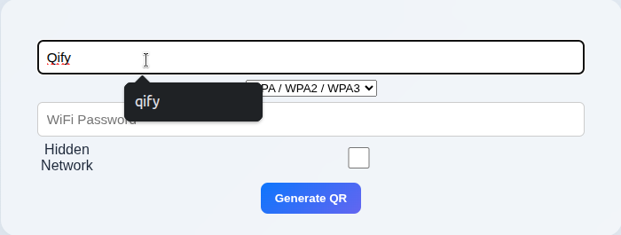
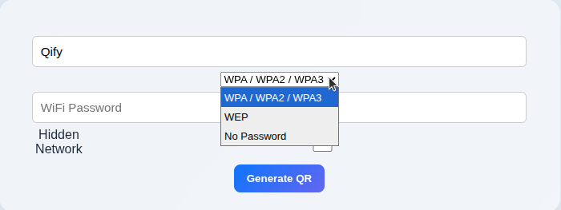
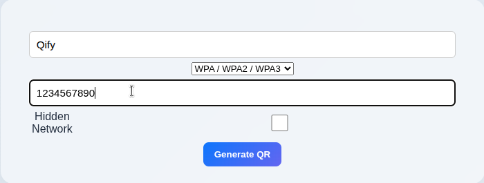

Generate WiFi QR codes instantly using QIFY and allow users to connect to your WiFi network without typing the password manually.
Open the WiFi QR Generator tool on QIFY.
Enter your WiFi network name (SSID) inside the WiFi name section.

Enter your WiFi password carefully.
Then choose your security type such as: WPA/WPA2, WEP or No Password.


Click on the Generate QR button.
Download the QR code and share it with others.
Users can scan the QR code to connect to your WiFi instantly without entering the password.